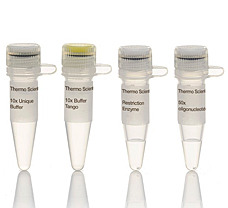
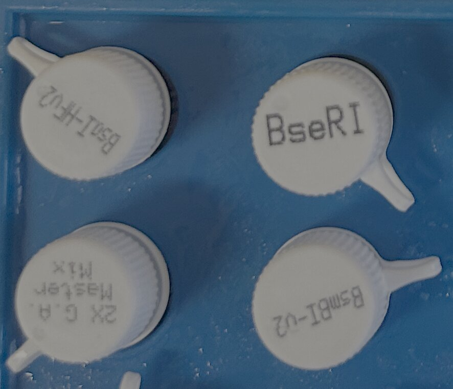
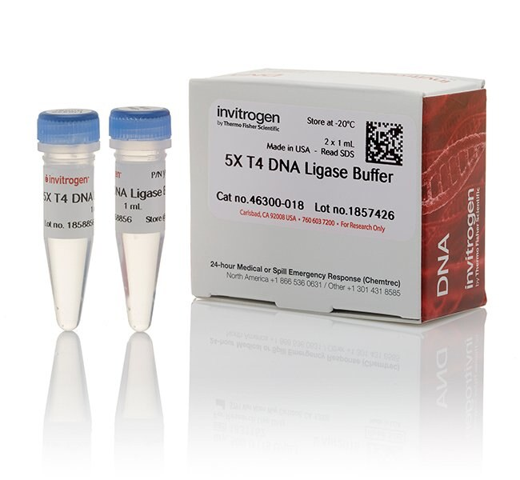
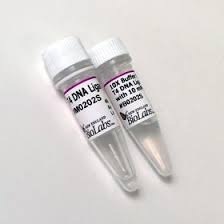

THIS IS AN EXAMPLE PROTOCOL. FOLLOW THE PROTOCOL ON YOUR INDIVIDUAL WORKSHEET
Set up the following reaction in a PCR tube, in the following order:
6.5 uL ddH20 1 uL T4 DNA Ligase Buffer 1 uL Vector digest 1 uL Insert digest 0.5 uL T4 DNA Ligase
Run the "T4ligation" program on the thermocycler:
25°C for 30 minutes 4°C forever
(or later)
A time-passes card: a squiggly orange title card lettered THREE HOURS LATER, with the words or later added beneath it in brackets. The ligation goes in the thermocycler and the room waits.